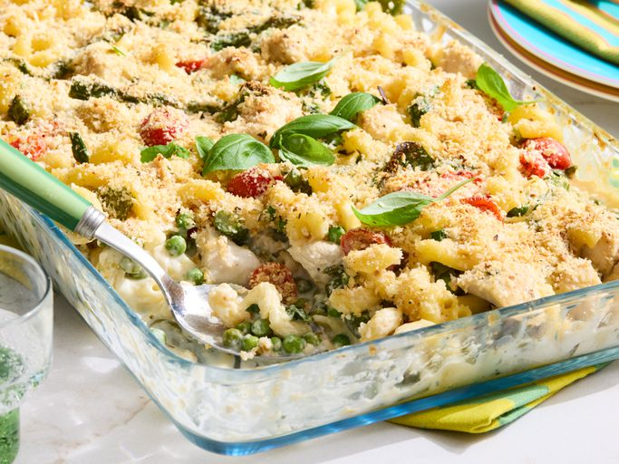

Chicken Primavera Pasta Bake

Recipe written by Sarah Brekke at allrecipes
Description
This chicken primavera pasta bake is full of fresh spring peas. asparagus, and spinach. With cavatappi pasta in a creamy cheese sauce, the casserole is topped with seasoned panko and Parmesan and bakes until bubbly and golden.
Ingredients
- 12 ounces dried cavatappi pasta
- 2 cups fresh or frozen peas
- 1 pound asparagus, trimmed and coarsely chopped
- 2 tablespoons olive oil, divided
- 1 teaspoon salt, divided
- 1 1/2 pounds skinless, boneless chicken breast cut into 1-inch pieces
- 1/4 cup butter
- 1/4 cup all-purpose flour
- 2 cups milk
- 1 (8 ounce) package cream cheese, softened
- 3/4 cup reduced-sodium chicken broth
- 2 cups coarsely chopped spinach
- 1 cup cherry tomatoes, halved
- 1 cup grated Parmesan cheese, divided
- 1 tablespoon chopped fresh basil or 1 teaspoon dried basil, crushed
- 1 tablespoon chopped fresh oregano, or 1 teaspoon dried oregano, crushed
- 2/3 cup seasoned panko breadcrumbs
- 3/4 teaspoon freshly ground black pepper, divided
Steps
- Gather all ingredients. Preheat the oven to 400 degrees F (200 degrees C). Grease a 3-quart rectangular baking dish.
- Bring a 4 to 6-quart Dutch oven filled with salted water to a boil, and cook pasta until tender with a bite, 9 to 11 minutes, adding peas and asparagus for the last 3 minutes of cooking time. Drain, reserving 2/3 cup of the pasta water. Hold pasta in the strainer; set Dutch oven aside to use for making the sauce.
- Meanwhile, heat oil in a 12-inch skillet over medium-high heat. Season chicken with 1/2 teaspoon salt and 1/2 teaspoon black pepper. Add chicken to hot oil. Cook, stirring occasionally, until chicken is golden and fully cooked, 5 to 7 minutes. An instant-read thermometer inserted near the center should read at least 165 degrees F (74 degrees C). Remove from heat.
- For sauce, melt butter in the Dutch oven. Whisk in flour, remaining 1/2 teaspoon salt and 1/4 teaspoon pepper. Whisk in milk, cream cheese, and chicken broth. Cook and stir over medium heat until thickened and bubbly. Cook and stir 1 minute more. Whisk in reserved pasta water, 2/3 cup Parmesan cheese, basil, and oregano.
- Add pasta mixture to the Dutch oven with sauce; toss to coat. Stir in cooked chicken, spinach, and cherry tomatoes.
- Spoon mixture into prepared baking dish. Sprinkle with remaining 1/3 cup Parmesan cheese and panko bread crumbs.
- Bake in the preheated oven until sauce is bubbly and topping is golden brown, 15 to 20 minutes.
Home